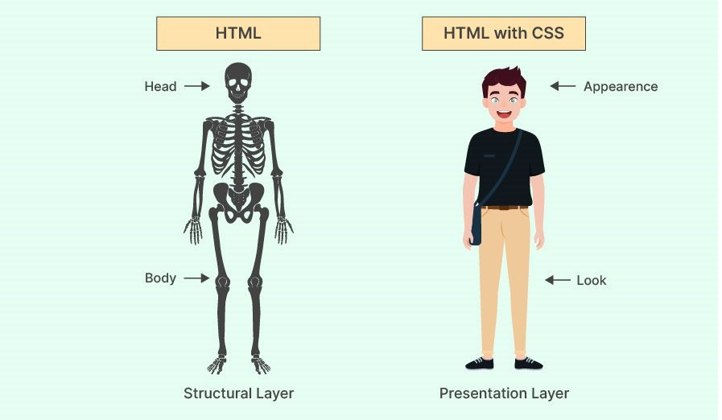

CSS (Cascading Style Sheets) is a stylesheet language used to describe the presentation of a document written in HTML or XML.
CSS allows you to control layout, colors, fonts, spacing, and many other visual aspects of your website.
This guide assumes you have basic knowledge of:
- HTML structure and tags.
- The concept of attributes.
- Basic understanding of how web pages are built.
HTML defines the structure of a webpage, while CSS defines its style and appearance. They work hand in hand to create functional and visually appealing web pages.
Selectors are patterns used to select elements to style. Examples:
p { color: blue; }
#idName { margin: 10px; }
.className { font-size: 16px; }CSS variables (custom properties) let you store values and reuse them:
:root {
--main-color: lightblue;
}
body {
background-color: var(--main-color);
}Variables are declared inside a selector using
--variable-namevar()When multiple CSS rules target the same element, the one with higher specificity wins.
Global styles apply to the whole document, often set on the
body:rootAlthough CSS doesn't have constants like programming languages, variables often serve this role.
CSS supports values such as:
- Numbers (
12px,2em) - Colors (
#fff,rgb(0,0,0)) - Strings (
"Open Sans") - URLs (
url("img.png"))
CSS doesn't have if/else, but we can achieve conditional styling with pseudo-classes like
:hover,:focus, :nth-child, or
media queries.CSS itself doesn’t have loops, but preprocessors like Sass and Less support looping. In vanilla CSS, repetition is often handled with selectors or pseudo-classes.
CSS has built-in functions such as:
-
– perform calculations for property valuescalc() -
– use custom properties (CSS variables)var() -
– reference external resources like imagesurl()
Example:
.box {
width: calc(100% - 50px);
background-color: var(--main-color);
background-image: url("image.png");
}- All documentation on this page is inspired by MDN